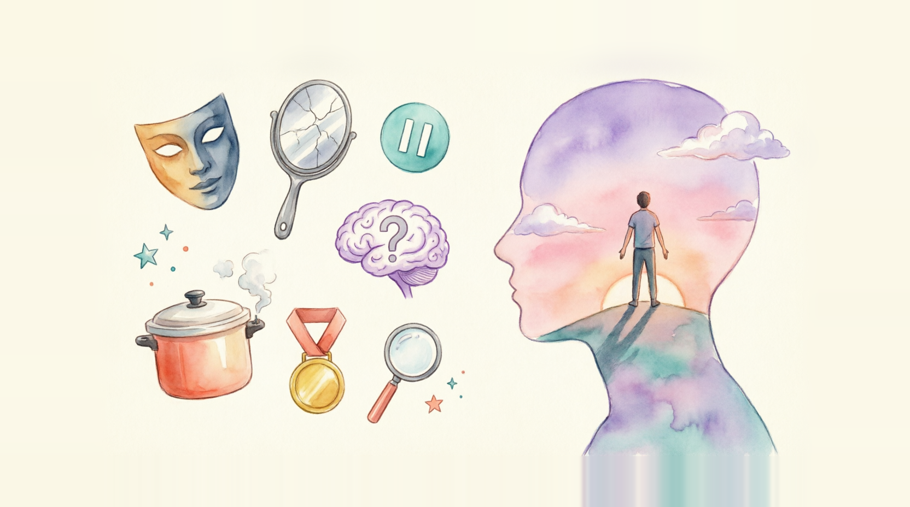

A self-inflicted feeling — and it's time to get it sorted
1. Have you ever felt like a "fraud" despite your achievements? What triggered it?
2. Do you think perfectionism helps or harms your performance?
It's a self-inflicted feeling that holds you back, burns you out and saps your motivation — and it's time to get it sorted.
There it goes again: that nagging, negative feeling that you are barely getting away with it. Any minute now, they will find out that you are a fraud! You may have done a good job, but that was by fluke more than skill. You might have fooled them into giving you this promotion, but within weeks you will mess up and the truth will be out. It is obvious that you will never be the real deal — not like those grown-up people over there.
But what if your brain is tricking you into believing your feelings represent reality? Do these impostor syndrome feelings stand up to scrutiny?
You might have heard the phrase "impostor syndrome" before, but what does it really mean? The term first appeared in 1978, in a research article by Doctors Pauline Clance and Suzanne Imes. While the original phrase given to this set of feelings was "impostor phenomenon", the term "impostor syndrome" became more widely used — perhaps because it's easier to say and spell! The problem with the word 'syndrome' is that it suggests a medical condition, when in this case it is no such thing. It is a feeling that can come and go. It is a brain trick — a cognitive distortion. Terminology aside, what is impostor syndrome? How is it relevant to you? And what can you do about it? The first point to emphasise is that this is about feelings, not an infection or broken bone. We are talking about a self-inflicted feeling. If you are doing it to yourself, it must surely be easy to fix, right? Achievable, of course, but not easy.
To overcome it, you need to be able to recognise it. It's a disconnected sensation — as if you are on the outside looking in. The others have a right to be there, but you don't.
It is the gnawing feeling that if you take your eye off the ball — if you stop doing your utmost to be loved, accepted and perfect — then you will be ostracised by a jeering crowd of haters who have discovered the useless or unlikeable you. It is a feeling of embarrassment when people praise you — they are just gullible or polite. It is a feeling of surviving rather than thriving. You are not alone in having these feelings. Jodie Foster described it like this: "When I won the Oscar, I thought it was a fluke [..] I thought everybody would find out, and they'd take it back. They'd come to my house, knocking on the door: 'Excuse me, we meant to give that to someone else. That was going to Meryl Streep.'" However, it might not have been accepted by Meryl Streep. She too experiences impostor syndrome feelings, which she describes like this: "You think, 'Why would anyone want to see me again in a movie? And I don't know how to act any way, so why am I doing this?'" Away from the world of the famous, let's look at some everyday feelings that you might recognise:
Do any of these feelings resonate?
Some feelings lead you astray, like hearing a car backfire and fearing for your life; or seeing a stranger in a café who reminds you of someone bad, and feeling anger towards them. They are very real feelings followed by responses that make no rational sense. While gut instinct can provide a healthy decision filter, blindly responding to every feeling with an action or decision can lead to negative consequences. Let's look at some of these — this should motivate you to work on reframing some of your impostor-syndrome-fed responses. I like to group the consequences into three categories:
This probably needs some explanation.
Why 'hide-out'? Think about it: when you are constantly doubting yourself and living in fear of being found out, it follows that you might keep your head down, try to blend in, agree rather than express your perspective, or even walk away from new opportunities. You are unlikely to voice your achievements and things you should be proud of — you mistakenly believe that this would come across as arrogant. Worse still, they would think: 'Wow, they are so full of themselves, and goodness knows why!'
Why 'burn-out'? You're trying too hard to please and be perfect. Perfectionism is a big symptom of impostor syndrome. There is nothing wrong with doing a good job, but if you impose ridiculous standards on yourself for fear of falling short and being found out as a fraud, well, you will burn out.
Why 'freak-out'? You become a living pressure cooker, and bottling up all those suppressed emotions is not good for you. That urge to break free and show the world a less filtered version of you... all that effort you make to be accommodating for the sake of being accepted. In the pressure cooker of impostor syndrome, these feelings have no way of escaping — until something goes wrong and the whole thing explodes! If you never let off steam, you risk exploding at the wrong time and place, with dire consequences. You erupt in anger during a meeting, you slam a door so hard that it breaks, you hand in your notice in a dramatic outburst... you get the picture. In an ideal world, you want to avoid all these negative consequences. It's time to get your impostor syndrome under control.
Unfortunately, there is no quick fix for impostor syndrome. There is no cure because it is not an illness or broken bone as we established earlier. It is a feeling. You can't stop feelings, and you shouldn't attempt to. We feel — we are human. Many of our negative thoughts are there to protect us. We have the same brain wiring as our ancestors did back in our hunter-gatherer days. We need a healthy dose of self-doubt to prevent us regularly running into danger. However, impostor syndrome is not this kind of natural, healthy self-doubt — it is not helpful. It is a trick, an illusion — it is your own brain giving you fake news!
But how do you avoid the negative consequences of impostor syndrome? You need to acknowledge these feelings. Pay attention to them and be aware of how you respond to them. Instead of making knee-jerk decisions that are fuelled by an irrational feeling, use the pause button. It is such a relief when you discover you are in control of the pause button. You own it. The sequence is: feeling — pause — action. Simple, but so effective.
There is slightly more to it than pressing the pause button, of course. What do you do during this pause? You need to get rational with your emotions. Here is how this works in practice: take the feeling and put it through the rationality filter. For example:
Feeling: I feel like a useless child in a world of grown-up professionals.
Rationality filter: Am I a child? Is everything about children useless? Who defines the word 'professional'?
Now ask yourself this: How helpful is this feeling? Only then should you proceed with the appropriate action or decision.
Knowledge is power when it comes to impostor syndrome — know it, make friends with it and become the boss of it. Give it a name, perhaps even draw your impostor syndrome character. Taking a step back from the nagging, negative chatter inside your head is a good feeling — a relief and a release. I speak from experience.
You may have done a good job, but that was by fluke more than skill. You might have fooled them into giving you this promotion, but within weeks you will mess up and the truth will be out.
A modal perfect (for example, might have done) is formed by: modal verb + have + past participle. It is used to express past suppositions, deductions, regrets, or unfulfilled possibilities. Key uses include must have (strong probability), should have (advice/regret), could have (past possibility/ability), and might have (uncertainty).
Purpose: To talk about actions or situations that happened (or didn't happen) in the past, often speculating about them.
Common Modal Perfects & Usage
— must have (past probability): used for logical deductions about the past.
Example: The ground is wet. It must have rained last night.
— could have / couldn't have (possibility/ability): used for something that was possible in the past but did not happen, or to make guesses.
Example: She could have won the race. / He couldn't have stolen it; he was with me.
— might have / may have (uncertainty): expresses that something was possible but you are not sure.
Example: I might have left my keys at the office.
— should have / shouldn't have (regret/advice): used to talk about a past action that was or wasn't a good idea.
Example: I should have studied harder for the exam.
1. A self-inflicted feeling of doubt often arises when...
2. One thing that can really sap my motivation is...
3. I sometimes feel like a fraud when...
4. Social media often tries to trick you into...
5. I know I can be gullible about things like...
6. I start to feel weary in situations where...
7. A bad piece of advice that could lead you astray is...
8. My gut instinct is usually right about...
9. The pressure to blend in can make people...
10. I try to come across as ______, but sometimes I...
11. When you bottle up suppressed emotions, the result can be...
12. For the sake of ______, people sometimes...
13. A healthy way for me to let off steam is to...
14. I tend to make knee-jerk decisions when...
How does the text describe impostor syndrome, and what practical steps does it suggest to keep it under control?
Can you recall a time when impostor syndrome made you believe your success was a fluke? How did you eventually recognise that you were the real deal?
Or:
Can you recall an instance where you tried hard to blend in or to come across as more confident to hide your self-doubt? What was the result?
1. The article calls impostor syndrome a "self-inflicted feeling" and a "cognitive distortion". What does this mean to you? Does framing it this way make it feel more or less manageable?
2. The article links perfectionism directly to "burn-out." Why do you think the fear of being "found out" drives people toward impossible standards? How can we differentiate between healthy striving for excellence and harmful perfectionism?
3. Have you ever worried that others would find out you were a fraud? How did that belief affect your behavior?
4. If you were to give your impostor syndrome a name or character, what would it be like?
5. Have you ever noticed yourself making a knee-jerk decision based on fear rather than facts?
6. How do you personally decide whether a feeling is helpful or harmful?
His tendency to often resulted in plans that were poorly thought out.
To in a crisis can exacerbate the problem instead of solving it.
A good leader gathers information and does not simply based on fear.
The art collector discovered the priceless painting was, in fact, .
He felt like accepting the award, believing his success was just luck.
The company was exposed as taking investments for a product that never existed.
Despite the hype, the restaurant served decidedly food at premium prices.
She refused to settle for a performance and practiced until it was perfect.
The film wasn't terrible, but its plot left the audience feeling indifferent.
After trying several imitators, I found a baker who is when it comes to sourdough.
Don't be fooled by his modest office; as a surgeon, he's .
Her confidence and skill in the negotiation proved she was .
In many cultures, it is customary to one's elders and ancestors.
The scientist was ed for her groundbreaking and ethical contributions to medicine.
He ed the ancient texts, handling the fragile manuscripts with the utmost care.
The forgotten leftovers in the container began to after a week.
Figuratively, his plan to get rich quick really of desperation.
This situation absolutely s; we've been treated so unfairly.
For the shy student, giving a presentation felt like .
The endless, repetitive meetings were sheer for the creative team.
Waiting for the test results in silence was its own form of .
The policies of the new management focused on employee well-being.
After her travels, she returned with a more view of the world.
An approach to justice considers rehabilitation, not just punishment.
The storm threatened to the small boats in the harbor.
Missing the crucial deadline could our chances of getting the contract.
He didn't want his nervousness to the important interview.
"," the professor said, "ask questions if anything is unclear."
If you have a better idea, suggest it.
We should try to finish today, but not at the cost of accuracy.
Constant criticism can quickly to try new things.
The dreary, gray weather began to to go for a run.
Doing repetitive tasks without a clear goal will inevitably .
His bad advice could if you're not careful.
The misleading map the hikers , and they got lost.
Don't let flashy marketing from the product's actual quality.
Her told her not to trust the stranger's offer.
Sometimes, you have to ignore the data and follow your .
His about the stock being a bad investment proved correct.
The spy knew how to with the crowd to avoid detection.
When visiting a new country, I try to and observe local customs.
The new furniture was chosen to with the room's existing style.
It's unhealthy to like anger and sadness.
Years of ing eventually led to a moment of intense outburst.
Therapy helped him learn how to express feelings instead of ing them .
He stayed in the difficult job his family's stability.
Let's not argue arguing; we need to find a solution.
She compromised maintaining peace within the team.
After a stressful week at work, he went to the gym to .
Their loud argument was just a way to after a long journey.
Playing a competitive sport is a great way to and clear your head.